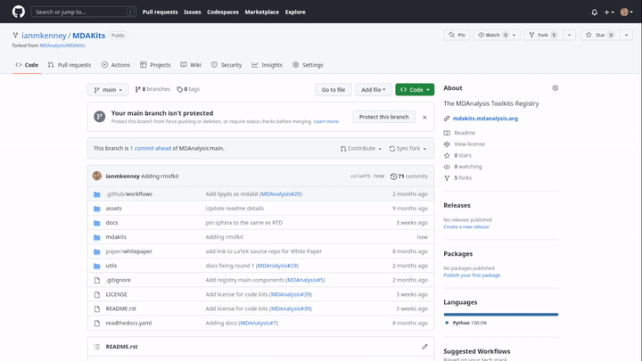

Part 7: Registering an MDAKit
See our YouTube tutorial for a video demonstration of this section.
The MDAKit registration is the same regardless of how the Kit was created. When registering your own Kit, be sure to also read the general information in the Adding an MDAKit to the Registry section.
In order to submit your MDAKit to the registry, you will need to create a pull request on GitHub against the MDAnalysis/MDAKits repository.
First, create a fork of the MDAnalysis/MDAKits repository on GitHub.
Clone the fork to your local machine, navigate into
MDAKits/mdakits/, and make an empty directory with your MDAKit name - this must match the project_name you specify below.git clone git@github.com:yourusername/MDAKits cd MDAKits/mdakits mkdir rmsfkit/ cd rmsfkit
Add a
metadata.yamlfor your MDAKit in this directory. A template can be found inmdakits/template/metadata.yaml. See the metadata.yaml specifications for more details on this file and its fields.For our
rmsfkit, the contents ofmetadata.yamlare:project_name: rmsfkit authors: - https://github.com/yourusername/rmsfkit/blob/main/AUTHORS.md maintainers: - yourusername description: An analysis module for calculating the root-mean-square fluctuation of atoms in molecular dynamics simulations. keywords: - rms - rmsf license: GPL-2.0-or-later project_home: https://github.com/yourusername/rmsfkit documentation_home: https://rmsfkit.readthedocs.io/en/latest/ documentation_type: API src_install: - git clone https://github.com/yourusername/rmsfkit.git - cd rmsfkit/ - pip install . ## Optional entries python_requires: ">=3.9" mdanalysis_requires: ">=2.0.0" run_tests: - pytest --pyargs rmsfkit.tests development_status: Beta
Commit and push this to your fork, e.g.:
git add metadata.yaml git commit -m "Adding rmsfkit" git put origin main
On the forked repository page in your browser, click “Contribute” to make a Pull Request (you may need to first refresh for the changes to show up). Add a title with the name of the Kit and add a quick description and click “Create pull request”.
Once the tests have passed, you can add a comment along the lines of “@MDAnalysis/mdakits-reviewers, ready for review”. The reviewers will get back to you with any change requests before merging it in as a Kit.
At this point there are no additional steps for registering your kit! However, your responsibility for your new MDAKit does not end here. Once on the Registry, the weekly CI runs will notify you if anything starts failing; and you can continue to expand and improve your code, it’s documentation/tests, make releases, and so on. Read the information on the Maintaining an MDAKit page for more.